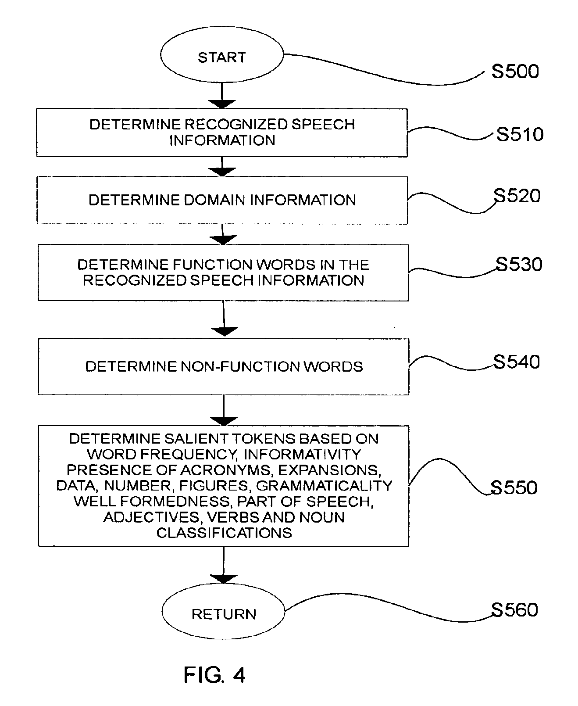

2017/01/05 - (Patent) Systems and methods for collaborative note-taking - part 2 1¶
Reading range : from [0045] to the end
- Function words include
determines ( the , that)
conjunctions( and , but )
prepositions( in, of )
auxiliary verbs ( be, have )
modals ( may, could )
quantifiers( some , both )
- Salient tokens(words)
High count within the document
Low count across documents
{kind=link}
FIG. 2 - An exemplary method of collaborative note-taking according to this invention 2
[0045] The relevance and correctness information for the salient tokens in the speech information. The classes of the WordNet® lexicon are used to provide an indication of the sematic relatedness vetween the salient tokens in the speech information and the words present in relevant portions of a presentation slide.
WordNet® 3 is a large lexical database of English.Nouns, verbs, adjectives and adverbs are grouped into sets of cognitive synonyms (synsets), each expressing a distinct concept. Synsets are interlinked by means of conceptual-semantic and lexical relations. The resulting network of meaningfully related words and concepts can be navigated with the browser. WordNet is also freely and publicly available for download. WordNet’s structure makes it a useful tool for computational linguistics and natural language processing.
[0047-48] The human sensible display attrubutes are dynamically determined based on any combination of confidence score , the relevance score , user interest and the like. => Optionally displayed in varying colors, fonts , sizes and so on to attract user’s attention.
[0061] The collaborative user feedback signal is used to adjust the correctness value associative with the salient token.
[0064] The automatic speech recognition system my be embedeed within the collaborative note-taking system.
[0065] The domain information associated with the speech information has been previously determined and saved into a memory from which the information is retrieved in step S520.
{kind=link}
FIG.4 - Salient token 4
[0074] Correctness scores associated with a token may be increased based on collaborative user feedback information indicating that a significant number of collaborative users have added the salient tokens to their private notes.
- [0074] Xerox Linguistic Environment(XLE) 5 or any other tools may be used to determine measures of correctness.
XLE consists of cutting-edge algorithms for parsing and generating Lexical Functional Grammars (LFGs) along with a rich graphical user interface for writing and debugging such grammars.
[0077] The confidence score may be obtained from an automatic speech recognition system or may be determined directly by the collaborative note-taking system.
[0085] 921-923 of the speech area 920 reflect the salient tokens in the speech information.

FIG. 7 - Collaborative note-taking user interface 6
- [Claim] A method for displaying collaborative user notes comprising the steps of:
Determining portions of a first information channel
Dynamically determining domain information based on the determined portions
Determining context information temporally associated with the determined portions
Determining a suggested note based on collaborative user feedback information
The determined portions of the first information channel and the temporally related context information.
Summary¶
In my opinion, this patent is focus on how to parse and recognize the speaker’s presentation by speaker identifire(e.g. microphone) then associate with the presentation slide to create notes. In these notes, more relevant and interesting material is optionally displayed in varying colors, fonts, size and so on to attract user’s attention. This collaborative note-taking system has some mechanisms(such as user feedback and auto recognition system) to ranked and adjust notes it created.
This is a totally different system from dropbox paper and hackpad that I often used before. In dropbox paper and hackpad , there is just a simple platform to allow a group of users to make the same note on its web interface in realtime. That is , everyone in this group can notice who is taking notes immediately and everyone can edit the content.
Reference¶
- 1
- 2
Fig 2 : https://patentimages.storage.googleapis.com/US20090204620A1/US20090204620A1-20090813-D00002.png
- 3
WordNote : https://wordnet.princeton.edu/
- 4
Fig 4 : https://patentimages.storage.googleapis.com/US20090204620A1/US20090204620A1-20090813-D00004.png
- 5
- 6
Fig 7 : https://patentimages.storage.googleapis.com/US20090204620A1/US20090204620A1-20090813-D00007.png
{kind=link}
{kind=link}
{kind=link}